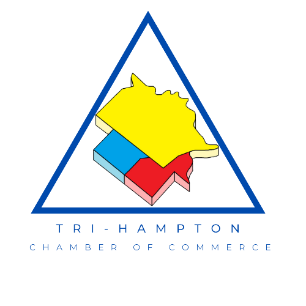

Purpose
The website for the Tri-Hampton Chamber of Commerce will help local businesses talk to each other. It will show information on member, activities, events, and how to join.
The website for the Tri-Hampton Chamber of Commerce will help local businesses talk to each other. It will show information on member, activities, events, and how to join.